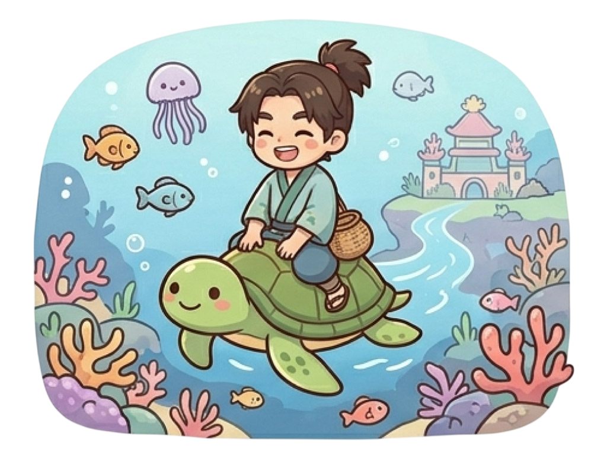
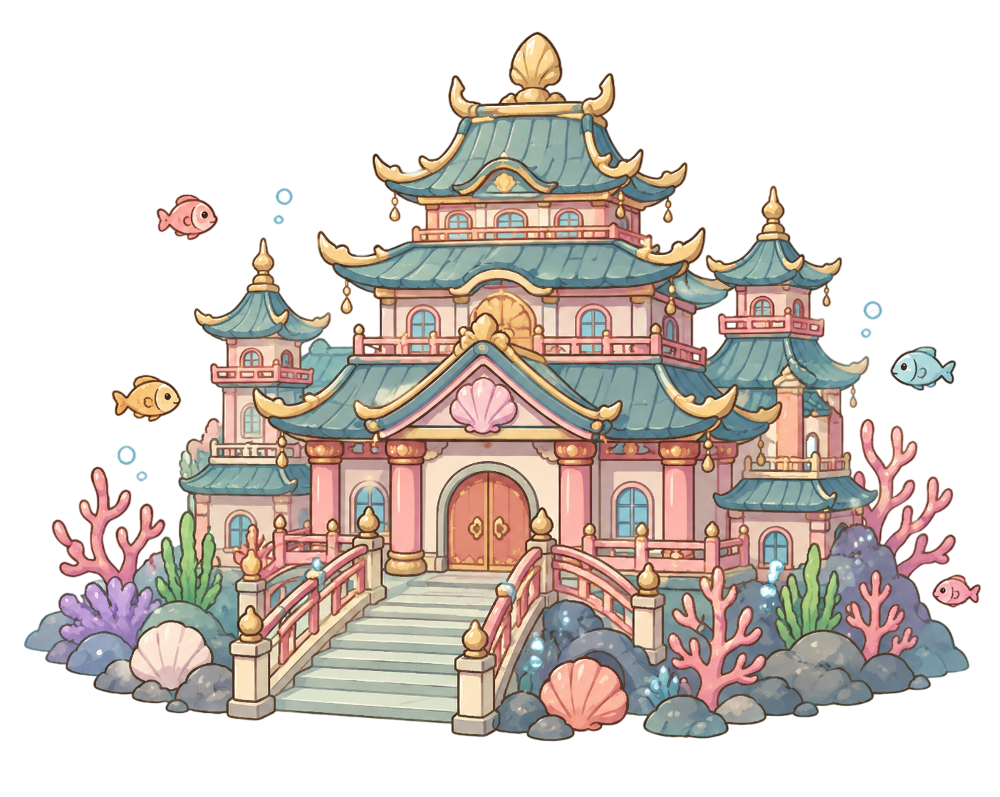
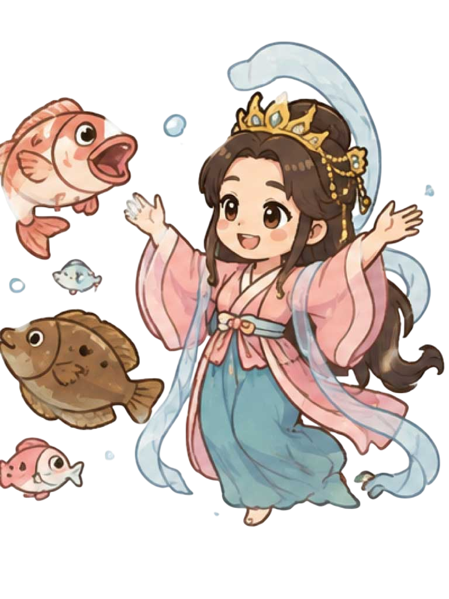
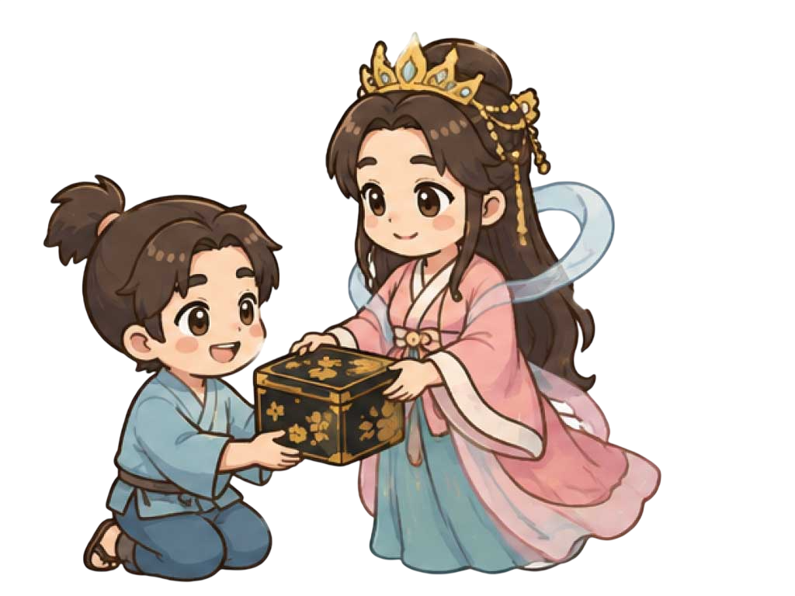
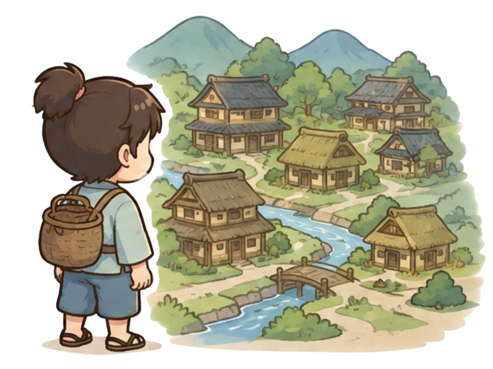
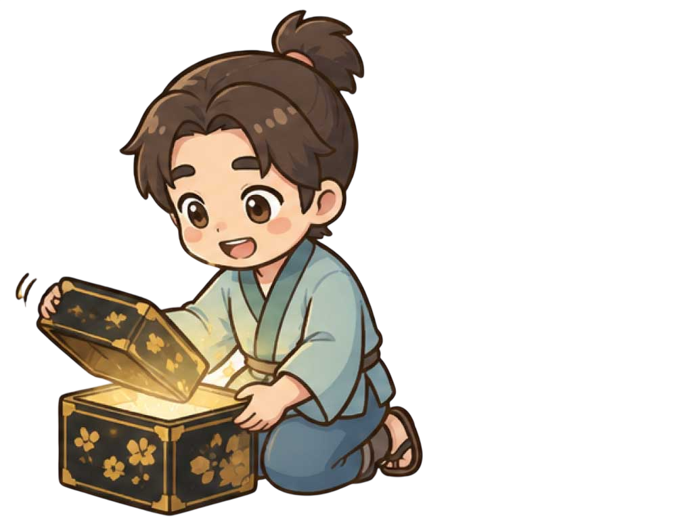

― 丹後の国とは ―
丹後の国（現在の京都府北部）
丹後は古くから大陸との交流が盛んで、『丹後国風土記』には浦島太郎の原型である「浦島子（うらしまこ）」の伝説が残っています。この土地で実際に海を渡る技術を持った人々や、異文化との出会いから生まれました。
「海への憧れ」と「歴史」が溶け合う、伝説の原風景そのものなんですね。
― 助けたのが亀である意味 ―
亀は古代において、大地（甲羅）を背負い、海と陸の両方を行き来できる特別な生き物でした。 当時の人々にとって亀は「異界と現世を繋ぐ架け橋」であり、海という異界へ入るための唯一の乗り物でもあったのです。 太郎は亀を助けたことで、人間の世界を越えて「海の彼方の世界」へ行くことができたのかもしれませんね。
第二章：碧き深淵への旅（異界への誘い）
数日後、太郎が海で釣りをしていると、水面からあの時の亀が顔を出しました。
「太郎さん、先日はありがとう。お礼に竜宮城へご案内します」

太郎が亀の背中に乗ると、海の中はキラキラと光り輝いていました。着いた先には、真珠のように美しい「竜宮城」が建っていました。
そこは、人間が一度も見たことのない、夢のような世界でした。
● 実はね・・・
― 亀という道案内 ―
海の道案内といえば、『古事記』の神武東征神話が原点です。 航路に迷った神武天皇を、速吸門（はやすいのと）から大和まで 亀の甲に乗って先導したのが槁根津彦（サヲネツヒコ）でした。 古代において亀は神聖な先導者の象徴だったんですね。
― 古代の異界への入り口 ―
古代の人々にとって、竜宮城（異世界）のような場所に行くことは、 現代の感覚とは違う「畏れ」を伴うものでした。 それは彼らが信じていた「異界」の入り口であり、 一度踏み入れると、元の生活に戻れる保証がない場所であったはずです。
第三章：四季が同居する都（理想郷）
竜宮城では、美しい乙姫様が迎えてくれました。
「ようこそ、浦島さん」

毎日おいしいごちそうを食べて、鯛や平目が楽しく舞い踊るのを見て、 太郎はとても幸せでした。不思議なことに、四つの戸を開けると 「春・夏・秋・冬」の景色が同時に広がっています。

太郎は夢中で過ごし、地上の時間をすっかり忘れていました。● 実はね・・・
― 竜宮城とは ―
竜宮城での時間が地上と違っていたのは、そこが神々の住む「常世（とこよ）」だったからです。当時の人々は、海の向こうには時間が流れない、あるいは全く別の時間が流れる世界があると信じていました。太郎は単に遊んでいたのではなく、自然のサイクルから切り離された、永遠の空間に迷い込んでしまったのです。
― 不思議なな世界 ―
『御伽草子（おとぎぞうし）』には、竜宮城を訪れた太郎が四方の障子（戸）をそれぞれ開けると、東は春（桜）、南は夏（蝉や水鳥）、西は秋（紅葉）、北は冬（雪）というように、四季の風景が一度に見えるという描写がなされています。この「四方四季の庭」の描写には、当時の中国から伝わった「陰陽五行説」の影響があると言われており、季節の循環から解き放たれた「永遠や不老不死を象徴する理想郷」を表現するための仕掛けだったと考えられているんです。
第四章：別れと約束の箱（決意）
楽しい時間が過ぎましたが、太郎は故郷のことが心配になりました。
「乙姫様、もう帰らなければなりません」
乙姫様は寂しそうに微笑み、一つの箱を渡しました。
「これは玉手箱です。どうしても困ったとき以外は、決して開けてはいけませんよ」
再会を約束し、太郎はまた亀の背に乗って海の上へ戻りました。

● 実はね・・・
― 玉手箱とは ―
昔話において、異界の住人から渡される「箱」は、この世とあの世を分かつ境界線を意味します。 乙姫様が渡した玉手箱は、単なるお土産ではなく、竜宮城という夢のような時間から、 人間社会という厳しい現実へ帰るための「通行証」みたいなものだったのでしょうか。
― 乙姫の思いとは ―
乙姫様が「困ったとき以外は開けてはいけない」と念を押したことには、単なる別れの悲しさ以上の意味が隠されています。彼女は地上の時間の残酷さを知っており、太郎を帰すことが、彼にとって何を意味するのかを理解していたのではないでしょうか。
第五章：失われた三百年と玉手箱（後日談）
村に戻った太郎は、びっくりしました。
知っている人が誰一人いません。
「浦島太郎？ その名前は、三百年前の言い伝えで聞くよ」

途方に暮れた太郎は、すがる思いで玉手箱を開けてしまいました。
中から真っ白な煙がフワリと立ち昇り、太郎を包み込みました。
すると、太郎の髪はみるみる白くなり、腰も曲がって、
おじいさんになってしまいました。やがて地上から消えた太郎は、
一羽の鶴となって空へ還ったと伝えられています。

● 実はね・・・
― 亀を助けたのに罰を受ける？ ―
なぜ亀を助けた太郎が、こんな目に遭わなければならないのか。 それは、この物語が「因果応報（良い行いに良い報いがある）」という人間社会の尺度ではなく、異界の時を享受した代償として、彼は人間としての時間をすべて奪われました。この理不尽さは、当時の人々が抱いていた「神の領域に触れることの畏怖」を象徴しています。 少し気の毒な気もしますね。
―人から伝説へ ―
なぜ鶴になるのか。古くから鶴は神の使いとされ、異界を往来する象徴でした。 人間としての生を使い果たした太郎が、現世の死から逃れ、神聖な存在として永遠を得た。 これは単なる結末ではなく、異界に招かれた者が辿り着く「人間を超えた先にある救済」なのです。 鶴となった太郎は、同じく鶴となった乙姫様と一緒に飛んで行ったと言う話ものこされてますね。
― ※余談ですが ―
乙姫様が渡した玉手箱は、実は「二度と離れたくない」という乙姫様のちょっぴり強引な独占欲の表れだったのではないか…という噂です。神様だって、大好きな人とずっと一緒にいたいという気持ちは、私たち人間と同じなのかもしれません。そう思うと、この悲しい物語も、ちょっぴり温かい愛の物語に見えてきませんか？